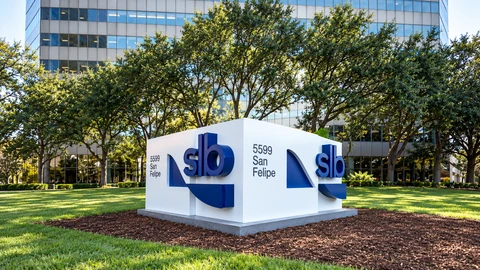

Financial news, market analysis and technology
Top Story
Market Analysis View all →
Market Analysis
Kotak Bank profit rises 29%, but deposit growth squeezes its lending margin
India’s Kotak reports stronger September-quarter earnings, while foreign-currency deposits complicate the picture behind its rapid expansion.

Market Analysis
Britain plans £20.4 billion boost for business and infrastructure finance
The proposed capital goes to two state-backed institutions. Their lending, guarantees and private partners will determine how much reaches businesses.

Market Analysis
Trump removes 50% tariff from some Canadian goods, adds others to the list
Changes effective October 30 spare selected plywood, packaging and machinery while adding other products. Importers still face overlapping duties.

Market Analysis
SLB’s sales rise 6%, but acquisitions explain much of the growth
The oilfield-services group reports $9.45 billion in quarterly revenue and forecasts about $10 billion next quarter, with regional disruption still clouding its outlook.
Tech & AI View all →
Tech & AI
Block previews Dessa, a voice AI trained on speech rather than text
Block’s Dessa research preview explores conversation without text-based training. Outside testing and a public release remain separate hurdles.

Tech & AI
Moonshot launches Kimi K3.1 Pro for coding and research, with model weights due in November
The new model is available through hosted services. Pricing and research claims give buyers more to test, while downloadable weights remain promised.
Tech & AI
AWS capacity is largely booked for 2027, Jassy says, as Amazon builds for AI demand
Amazon is keeping capacity for on-demand users even as large commitments reach into 2028. Its next earnings report will test the investment story.

Tech & AI
AI drug developer Pathos raises $237 million as Bristol Myers backs its research platform
A roughly $3 billion valuation accompanies a separate $55 million data agreement with Tempus as the companies target better drug-development decisions and neuroscience trials.
Crypto View all →

Crypto
Electrum updates Bitcoin wallet after finding a transaction-replacement risk
Electrum 4.8.3 fixes a high-severity issue involving a malicious server and transaction replacement. Authentic downloads remain essential.

Crypto
Tether wins 15 industry commitments for software linking Bitcoin mining equipment
Manufacturers and pools plan shared software integrations. The documentation shows how much operational control still rests with mining-site operators.

Crypto
Crypto app EtherFi buys Zeal assets as wallet users face a December move
Zeal asks users to move assets by December 1. Migration to EtherFi is optional, and the deal does not transfer customer accounts, keys or funds.

Crypto
Initia halts its blockchain after an exploit, with about $2.7 million reportedly bridged out
The project paused its main chain and connected rollups while investigating unauthorized token creation. Its co-founder’s initial estimate is not a final accounting of losses.
News Feed